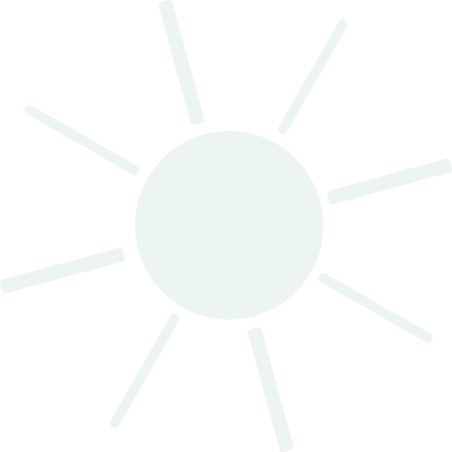
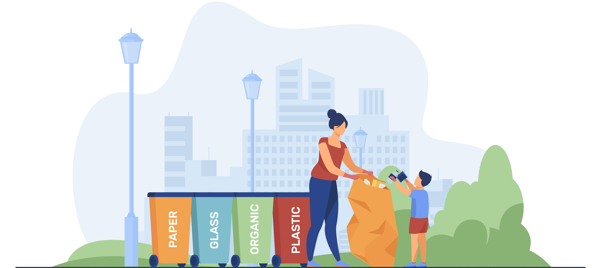
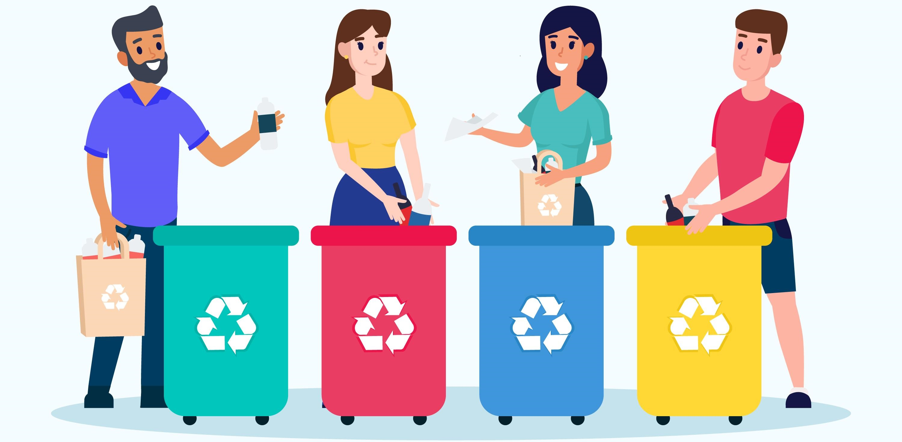
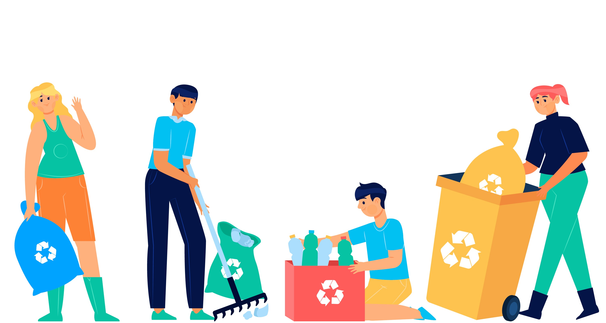
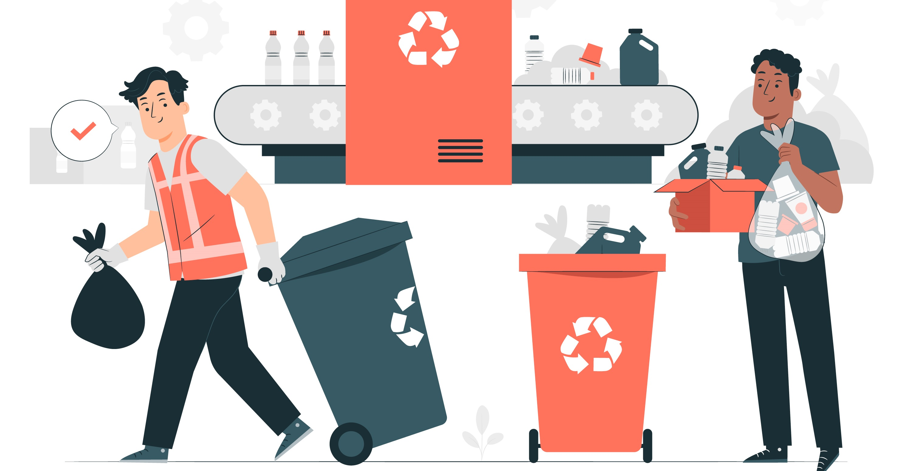

SERVICES
We offer professional waste collection services tailored to suit residential, commercial, and industrial clients. Our team is equipped with modern vehicles and tools to ensure timely and efficient waste removal.
At Kasantos Resources Nigeria, we believe in turning waste into valuable resources. Our recycling services help reduce landfill waste by recovering materials such as paper, plastics, metals, and glass for re-use.
Handling hazardous waste requires special expertise, and we are equipped to handle the safe disposal of toxic, chemical, and industrial hazardous waste, in full compliance with environmental regulations.
At Kasantos Resources Nigeria, we provide safe and compliant solutions for the collection, treatment, and disposal of medical waste, ensuring the safety of healthcare providers and patients.
Our consultancy services provide expert advice on waste reduction, sustainable practices, and regulatory compliance. We assist businesses in managing their environmental impact.